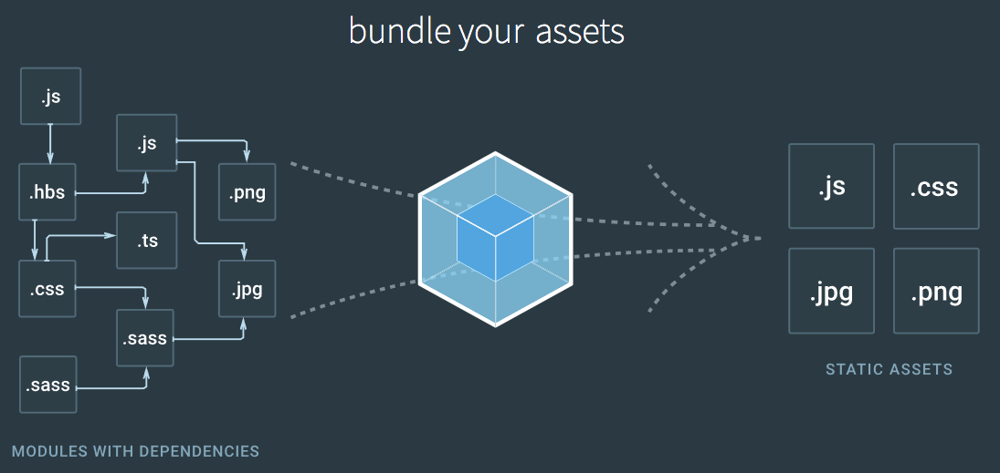

“一切皆为模块”
“需要解决的问题”:
import XXX from XXX的写法，用webpack默认打包方式去打包，框架无法识别import esriMap from "esri/map"，进而统一采用这种方式去编写;module.exports = {
entry: "./src/main.js", //入口文件
output: {
path: path.resolve(__dirname,'dist'),
filename: "bundle.js",
libraryTarget: "amd" //核心，打包成AMD模块，让require.js识别
},
plugins: [],
module: {
rules: [
// 编译ES6
{
test: /\.js$/,
loader: "babel-loader"
}
]
},
externals: [
// 核心，遇到"esri/XXX"||"dojo/XXX"...开头的文件，不打包，
// 改成define(["esri/XXX"])
function(context, request, callback) {
if (
/^dojo/.test(request) ||
/^dojox/.test(request) ||
/^dijit/.test(request) ||
/^esri/.test(request) ||
/^dgp/.test(request)
) {
return callback(null, "amd " + request);
}
callback();
}
]
}
// main.js
import Map from "esri/map";
import ArcGISTiledMapServiceLayer from "esri/layers/ArcGISTiledMapServiceLayer";
import ArcGISDynamicMapServiceLayer from "esri/layers/ArcGISDynamicMapServiceLayer";
compile...
// bundle.js
define(["esri/map","esri/layers/ArcGISTiledMapServiceLayer",
"esri/layers/ArcGISDynamicMapServiceLayer"], function(...){
...
})
我分别针对react和vue配合Arcgis+webpack各写了份demo，都已经上传到github上。配置webpack方面，vue会比react繁琐一点，但是通过.vue这种方式去管理和编写组件无疑更加友好。学习成本上，react会比vue陡峭许多，react全家桶(react+redux+react-router)比vue全家桶(vue+vuex+vue-router)更难上手。我针对Arcgis+webpack+vue进行更全面的配置，等下我会细讲和演示。
值得思考的问题🤔
依旧从0️⃣开始搭建
环境： node.js:10.1 webpack:4.8.3 arcgis-jsapi:3.24 vue:2.5.16
关注github上✨比较多的项目(轮子)，尝试去读里面的源码，看看大牛们是怎样写代码的，学学他们的思想以及编程技巧，如果发现了bug可以尝试去修复，然后提PR，如果成功合并，那么你成为了贡献者，是非常有成就感的。你也可以结合自己的思考模仿一个出来，或者彻底重写。
把我们平时在项目中自己写的一些组件从业务中解出来，再封装成可以高度复用的组件，开源出去，也是一种很好方式
我听一个前端大牛说，唯有多造轮子才能不断进步
坚持写博客，不断沉淀